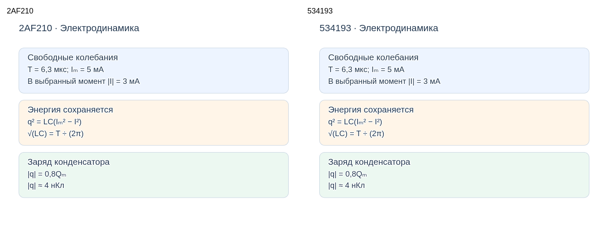
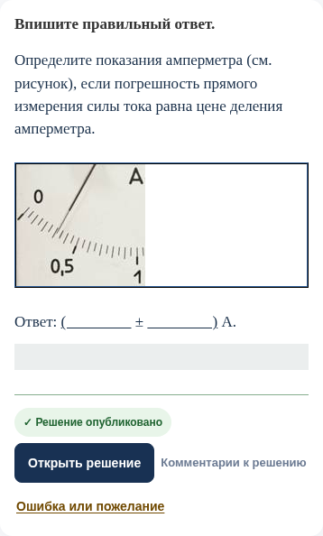
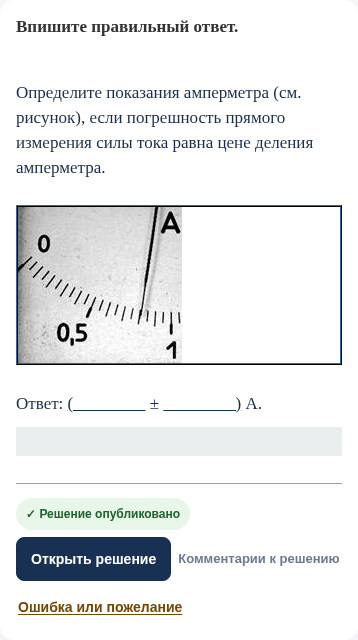

ege-fipi.ru · 25.11.2026 · опубликовано около 19:44 МСК.
У 2AF210 и 534193 одинаковые условие, ответ, текст решения и математическое содержание схемы. Отличается подпись ID. Предпочтительный URL — /tasks/534193, уже присутствовавший в доступном списке поиска. У /tasks/2AF210 изменены только canonical и og:url, из Sitemap убран только его адрес. Оба URL отвечают 200, задачи и решения доступны по прежним ID.
Сверены исходные фрагменты physics-21.raw.html / physics-23.raw.html, все поля опубликованных решений и SVG. После замены только технических меток и видимой подписи ID код SVG совпадает. Схемы и страницы фактически просмотрены на мобильной и настольной ширине.

Условие, законы, формула и ответ независимо сверены с Решу ЕГЭ № 25048: сохранение энергии LC-контура и формула Томсона дают заряд 4,0107·10⁻⁹ Кл, то есть около 4 нКл. Содержимое собственных решений не изменялось. Несвязанный с задачей шаблон критериев на внешней странице не использовался.
Например, у 1A3704 и 88426E совпадает текст вопроса об амперметре, но на изображениях разные положения стрелки. Сам текст без рисунка не определяет задачу. В разных вариантах встречаются также разные графики функций, формулы-картинки и таблицы.


| Предмет / ID | Исключённые ID | Решение |
|---|---|---|
| ЕГЭ математика C4507A 92FD74 6CEDB3 015B20 858BD4 0000C3 9EB1CA | 015B20; 858BD4 | Сохранены отдельные адреса; полная эквивалентность не доказана |
| ЕГЭ математика F82962 FF843F 35F6F7 3975C8 | FF843F | Сохранены отдельные адреса; полная эквивалентность не доказана |
| ЕГЭ математика 0B896F 6E8B6F 656B14 448E90 | 6E8B6F; 448E90 | Сохранены отдельные адреса; полная эквивалентность не доказана |
| ЕГЭ математика 56CF6E 20970C | 56CF6E | Сохранены отдельные адреса; полная эквивалентность не доказана |
| ЕГЭ математика 31336D 90227A 08C3D9 AFF75F D6A2A2 06DEEE | AFF75F; D6A2A2; 06DEEE | Сохранены отдельные адреса; полная эквивалентность не доказана |
| ЕГЭ математика DDA73A 68AC00 E18EA6 | E18EA6 | Сохранены отдельные адреса; полная эквивалентность не доказана |
| ЕГЭ математика 913A8E CA314B 6FA927 D5DBD8 6F2D5E 87FAA1 | D5DBD8; 6F2D5E | Сохранены отдельные адреса; полная эквивалентность не доказана |
| ЕГЭ математика F469FF 783DBA 91C2AD | 91C2AD | Сохранены отдельные адреса; полная эквивалентность не доказана |
| ЕГЭ математика A49974 E2F2DA 713053 | E2F2DA | Сохранены отдельные адреса; полная эквивалентность не доказана |
| ЕГЭ математика 3D9010 82DA5C 8ADFCC | 8ADFCC | Сохранены отдельные адреса; полная эквивалентность не доказана |
| ЕГЭ математика 7D21DC 1DC3CC | 7D21DC; 1DC3CC | Сохранены отдельные адреса; полная эквивалентность не доказана |
| ЕГЭ физика 453BF5 E416F3 | E416F3 | Сохранены отдельные адреса; полная эквивалентность не доказана |
| ЕГЭ физика 3583C0 BBF38A 552787 725078 DE5D18 6ED11E D56BAF | 725078; DE5D18 | Сохранены отдельные адреса; полная эквивалентность не доказана |
| ЕГЭ физика 88426E 1A3704 396F0B DC1F24 001FCD | 1A3704; 396F0B; DC1F24 | Сохранены отдельные адреса; полная эквивалентность не доказана |
| ЕГЭ физика A2E38D A46BFA E4DA0E F36627 | A46BFA; E4DA0E | Сохранены отдельные адреса; полная эквивалентность не доказана |
| ЕГЭ физика EC538E AFA401 70C7B0 | 70C7B0 | Сохранены отдельные адреса; полная эквивалентность не доказана |
| ЕГЭ физика 343D86 8BB009 50081F | 8BB009; 50081F | Сохранены отдельные адреса; полная эквивалентность не доказана |
| ЕГЭ физика 7AC008 7D3CB8 | 7AC008 | Сохранены отдельные адреса; полная эквивалентность не доказана |
| ЕГЭ физика 2AF210 534193 | 2AF210 | Канонический адрес 534193 |
| ОГЭ математика D2D94B 686EFB 9C2804 794271 BC4EBE 8F5C52 7ECBCE E331C7 E52B99 07C968 A1906B E3456A | D2D94B | Сохранены отдельные адреса; полная эквивалентность не доказана |
Реестр содержит одну проверенную пару и отпечатки исходного условия, ответа, решения, SVG и подписи для обеих страниц. Изменение содержимого или снятие публикации возвращает собственный canonical и адрес в Sitemap до новой проверки. Живой тест изменения решения выполнялся только в отдельной SQLite, после него все строки восстановлены.
После публикации выполнена одна попытка отправки 2AF210 через API Вебмастера. Ответ HTTP 504. Полная очередь до/после содержит 86 задач, ни одной для этой пары; квота осталась 10/10. Приём заявки не подтверждён, второй URL не отправлялся, слепых повторов не было. Для ручной отправки подготовлен список двух адресов. Обычный обход сайта роботом может продолжаться независимо от этой ошибки.
Это рекомендация поисковику об основном адресе для одного подтверждённого дубля. Ожидается, что основным останется 534193; возврат обоих одинаковых URL в поиск не является целью. Изменение 960 исключённых и эффект на трафик сейчас не измерены. Полезность остальных исключённых страниц и конкретная причина решения Яндекса этим аудитом не установлены.
Подход соответствует документации Яндекса о canonical; поисковик учитывает рекомендацию при новом обходе и может выбрать иной адрес.